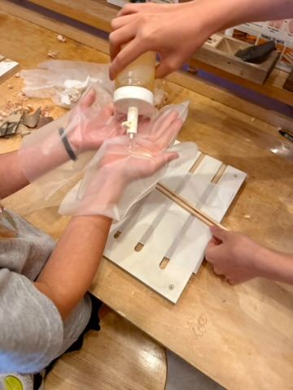
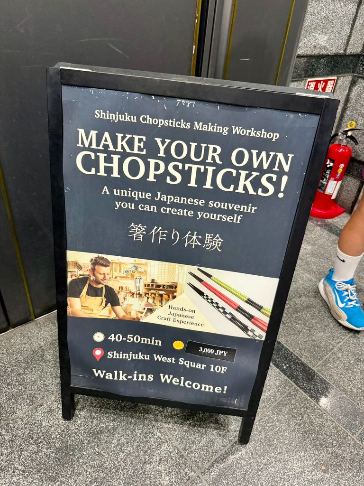

Crafting Our Own Custom Chopsticks in Japan! 🥢✨


Watch on YouTube →
When traveling or settling into a new place, the best souvenirs aren’t the mass-produced trinkets you pick up at a gift shop—they’re the memories you build yourself. During one of our recent adventures, we decided to step off the standard tourist trail and try our hands at a traditional Japanese craft: making our own custom wood chopsticks.
If you haven’t seen the process in action yet, check out our quick video below!
🎥 Watch the YouTube Short: Making Our Own Chopsticks in Japan
Why a Chopstick Workshop?
Chopsticks (hashi / 🥢) are an everyday staple in Japan, but crafting a pair from scratch gives you a whole new appreciation for the artistry behind them. From picking the raw timber to carving, sanding, and oiling, the workshop turned out to be one of our favorite hands-on experiences so far.
Step-by-Step: From Raw Wood to Final Polish
1. Choosing the Wood & Sizing
Every hand is different, and as it turns out, so is the ideal pair of chopsticks! We started by measuring our hand size to determine the perfect length for comfort. Then, we selected our wood blocks—balancing texture, grain patterns, and durability.
2. Shaving and Shaping
Using traditional hand planes and wood-carving tools, we shaved down the blank wood blocks. Getting four sides completely even—and tapering the tips just right—takes a steady hand, a bit of patience, and a lot of focus!
3. Sanding to Perfection
Once the general shape was set, we moved on to progressively finer grits of sandpaper. This step is where the wood really transforms, going from rough and blocky to silky smooth.
4. Personal Touches & Finishing
To top it all off, we added custom details to make them uniquely ours and finished the wood with food-safe oils to bring out the rich, natural grain.
The Best Kind of Souvenir
There’s something incredibly satisfying about bringing home a functional tool that you crafted with your own hands. Every time we set the table now, it’s a quick reminder of the fun, effort, and history packed into that workshop.
If you’re looking for a fun, interactive activity in Japan that’s great for adults and kids alike, we highly recommend finding a local woodworking or craft workshop!
💡 Tips for Booking Your Own Workshop:
- Plan Ahead: Popular craft workshops fill up fast, especially on weekends—book online a few weeks early.
- Language Friendly: Many local craft studios cater to English speakers or rely on intuitive visual instruction, making it super easy to follow along.
- Take Home Ready: Most workshops treat the wood with natural, quick-drying oils so you can pack your creation straight into your bag.